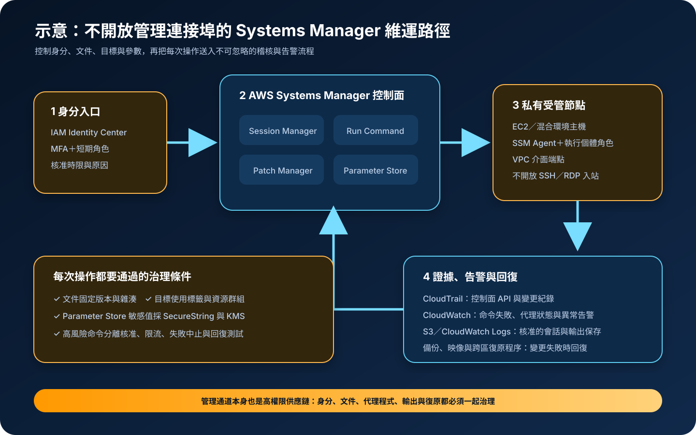

AWS Systems Manager：受管節點、安全維運與自動化
AWS Systems Manager 將雲端與混合環境節點的清冊、互動式連線、命令、修補、參數與自動化集中到受管控制面。它可以減少直接開放 SSH 或 RDP 的需要，但不會自動消除過寬權限、惡意文件、代理程式失聯或錯誤的大規模變更。
作者：Dr. William｜查閱與發布：2026-09-14
服務定位
AWS Systems Manager 是 AWS 的節點管理與安全維運服務。EC2 執行個體、部分邊緣裝置及透過混合啟用註冊的非 AWS 主機，可在安裝並連通 SSM Agent、具備必要身分權限後成為受管節點。管理者再透過 Session Manager、Run Command、Patch Manager、Automation、State Manager、Inventory 與 Parameter Store 等能力執行日常維運。
Systems Manager 不是完整的端點偵測與回應、備份或組態管理替代品。它提供控制面與自動化元件；作業系統強化、應用相依性、變更核准、例外處理、證據保存及復原成效仍由使用組織設計與驗證。
核心概念與適用邊界
主要元件
- 受管節點：SSM Agent 透過出站 HTTPS 與服務端點通訊，並使用執行個體設定檔或混合環境服務角色取得權限。
- Session Manager：由 IAM 控制的互動式 shell 或連接埠轉送，不必把主機管理連接埠暴露於網際網路。
- Run Command／Automation：使用 SSM Document 對指定節點執行命令或多步驟作業，可設定並行數、錯誤門檻與輸出位置。
- Patch Manager：以修補政策、基準與維護時段掃描或安裝作業系統更新；安裝後的相容性仍須測試。
- Parameter Store：保存階層式設定；敏感值使用 SecureString 並由 AWS KMS 加密。完整機密輪替需求可評估 Secrets Manager。
邊界與依賴
- 控制面是區域性服務，節點、文件、參數、日誌與金鑰的區域配置必須一致或明確複製。
- 代理程式停止、網路端點不可達、IAM 權限錯誤或系統時間異常，都可能使節點離線。
- Session Manager 降低入站曝險，但取得高權限工作階段的人仍可能讀取或修改主機資料。
- Run Command 可快速擴大變更，也會快速擴大錯誤；目標、文件版本、並行數與失敗中止必須受控。
- Parameter Store 不是任意大型資料庫，配額、層級、API 吞吐、歷史與輪替能力須納入設計。
適合與不適合的使用情境
適合
- 需要在不開放主機管理入站連接埠的前提下，對私有子網路內節點進行經授權的維運。
- 需要跨多個帳號或環境建立節點清冊、修補政策、狀態一致性及可稽核自動化。
- 需要以標籤、資源群組、最大並行數與錯誤門檻控制批次命令或維護時段。
- 需要集中保存非敏感設定與 KMS 加密的 SecureString，供工作負載以 IAM Role 在執行期讀取。
不適合或不能單獨完成
- 必須在完全離線且無法連往 Systems Manager 端點的節點上即時操作，不能只依賴雲端控制面。
- 需要完整弱點管理、惡意程式偵測、端點隔離或數位鑑識時，仍需其他安全能力與程序。
- 未經分批測試就對全部正式節點執行高風險命令或修補，不應把自動化速度當作安全保證。
- 把長生命週期資料庫登入資訊交給 Parameter Store 卻未設計輪替，可評估具輪替生命週期的 Secrets Manager。
示意故事案例：私有應用節點的安全維護
以下為示意案例，不代表特定組織或正式部署。 一個訂單平台在兩個可用區運作六十台 EC2 執行個體。安全群組不允許來自網際網路的 SSH 或 RDP；節點透過私有 VPC 介面端點連往 Systems Manager、CloudWatch Logs 與必要的 KMS 服務。維運人員以 IAM Identity Center 聯合登入，完成 MFA 後取得限時角色，Session Manager 權限只涵蓋指定環境與標籤。
每月修補先在測試群組執行，再進入少量正式節點，確認健康檢查、應用指標與回復程序後才逐批擴大。Run Command 固定文件版本並限制最大並行數與錯誤門檻；敏感設定以 Parameter Store SecureString 和 KMS 管理，資料庫機密則由 Secrets Manager 輪替。CloudTrail 保存 API 行為，CloudWatch 監看代理程式離線、命令失敗及異常工作階段，命令輸出與核准的會話紀錄送入集中儲存。跨區演練會重新建立角色、端點、文件與參數，並從備份或映像恢復節點。

建置與運作流程
- 建立節點與責任清冊：記錄帳號、區域、作業系統、業務擁有者、標籤、資料分類、修補時限、維護時段及復原目標。
- 部署並更新代理程式：使用可信映像或受控流程安裝 SSM Agent，確認版本、系統時間、出站連線與自動更新政策。
- 建立私有管理路徑：節點置於受控子網路，依需求建立 Systems Manager 相關 VPC 介面端點；安全群組與端點政策只允許必要來源及動作。
- 設計身分與核准：人員使用聯合登入、MFA 與短期角色；工作負載使用執行個體角色。分離文件建立、執行、核准與稽核責任。
- 限制文件與目標：只允許核准的 SSM Document、固定版本或雜湊、指定標籤與資源群組，並設定並行數、錯誤門檻與逾時。
- 分階段修補與變更：先掃描與測試，再依環境逐批部署；用負載平衡、維護時段與健康檢查維持服務容量。
- 治理參數：非敏感設定與敏感值分流；SecureString 選擇適當 KMS 金鑰並限制讀取。任何設定都不得寫入公開儲存庫或未受控日誌。
- 集中稽核與告警：啟用組織層級 CloudTrail，將核准的工作階段與命令輸出送至受控日誌位置，使用 CloudWatch 告警監看異常。
- 演練中斷與復原：測試控制面或代理失聯時的安全操作，以及錯誤修補、錯誤命令、區域中斷時的停止、回復與跨區重建。
成本、可用性與維運考量
Systems Manager 多項基礎能力對 EC2 節點沒有額外服務費，但進階執行個體層級、混合環境受管節點、Parameter Store 進階參數與高吞吐、Automation 步驟、OpsCenter、Application Manager 或其他計量功能可能收費。CloudWatch Logs、S3、KMS、CloudTrail 額外事件、VPC 介面端點、資料傳輸、快照與備份也可能產生費用；應依當前定價頁與實際呼叫量估算。
Systems Manager 控制面按區域運作。高可用工作負載要把變更分散到可用區並維持最低健康容量，不能同時修補所有節點。命令與 Automation 需要設計冪等、逾時、重試、並行與失敗中止；控制面暫時不可用或代理離線時，既有應用通常可繼續運作，但新的管理操作可能延後。
跨區復原不能只複製一份文件。備援區域需準備 IAM、KMS、VPC 端點、日誌目的地、核准文件、Parameter Store 值、映像與備份，並實測重新註冊節點、敏感設定解密、DNS 或流量切換及業務驗證。可復原性以演練結果為準。
Systems Manager 特有資安風險與控制
- 受管通道被當成隱蔽管理入口：Session Manager 不需入站連接埠，因此更要以特定節點標籤、MFA、短期角色、工作階段時限與核准流程限制存取。
- SSM Document 供應鏈遭竄改：分離文件作者與執行者，限制可用文件、固定版本或雜湊，對分享、更新及跨帳號來源建立 CloudTrail 告警。
- 大規模錯誤或惡意命令：Run Command 採小批次、低最大並行數、明確錯誤門檻、逾時與中止；正式環境先經測試與核准。
- 目標標籤漂移：若權限依標籤控制，未受控的標籤修改可能改變可操作範圍。限制標籤寫入並監看高權限資源的標籤變更。
- 代理程式或節點身分遭冒用：維持 SSM Agent 更新，縮小執行個體角色權限，保護執行個體中繼資料服務，移除退役節點與混合啟用。
- 工作階段與命令內容外洩：日誌可能含個資或敏感輸出。事前定義可記錄範圍、加密與存取權限，禁止輸出任何 credential、Access Key、Secret Key、Token、密碼或 cookie。
- 連接埠轉送降低可視性：對 Session Manager 連接埠轉送與 SSH 模式採更嚴權限；這類工作階段的內容記錄能力有限，需以來源、目的、時限與網路遙測補強。
- Parameter Store 解密過寬：SecureString 同時限制參數路徑與 KMS 解密權限；避免讓廣泛的路徑查詢間接取得不應讀取的敏感值。
- 公開與外送路徑：節點使用私有子網路與 VPC 端點，端點政策及安全群組只放行必要流量；S3／CloudWatch Logs 目的地阻擋公開存取並使用 KMS 加密。
- 修補造成中斷或仍留弱點：定義修補基準、例外期限、掃描與安裝證據；先備份或建立映像，分批部署並驗證應用，失敗時執行回復。
共同責任邊界
AWS 負責 Systems Manager 受管控制面與底層雲端基礎設施的安全，並提供區域服務端點、API、身分整合、文件及節點管理功能。客戶負責節點作業系統、SSM Agent 生命週期、執行個體或混合角色、IAM 與 KMS 政策、網路路徑、文件內容、命令目標、修補基準、參數分類、日誌保存及自動化結果。
客戶仍須落實 IAM 最小權限、人員 MFA 與短期憑證、工作負載角色、網路隔離、關閉不必要的公開存取、KMS 加密、Secrets Manager／Parameter Store 適當分流、CloudTrail／CloudWatch 觀測，以及備份和跨區復原。AWS 不會判斷某個命令是否符合業務變更，也不會替客戶驗證修補後應用是否正常。
上線前可執行檢查清單
- □ 所有受管節點都有擁有者、環境、區域、資料分類、維護時段、修補 SLA、RTO 與 RPO。
- □ 人員使用聯合登入、MFA 與短期角色；節點使用最小權限執行個體或混合服務角色。
- □ 正式節點不公開 SSH／RDP；私有端點、安全群組、DNS 與端點政策已實測。
- □ Session Manager 權限依節點、標籤、時限與用途限制，高風險工作階段具核准和告警。
- □ Run Command／Automation 只使用核准且固定版本的文件，並設定並行、錯誤門檻、逾時及失敗中止。
- □ 修補先掃描、測試與備份，再分批部署；已驗證健康容量、應用功能和回復程序。
- □ Parameter Store 敏感值使用 SecureString 與適當 KMS 金鑰；完整輪替機密已評估 Secrets Manager。
- □ S3、CloudWatch Logs 與其他輸出位置阻擋公開存取、使用 KMS 加密並限制保存與查詢權限。
- □ CloudTrail 集中保存；CloudWatch 已監看節點離線、命令失敗、文件與標籤變更及異常工作階段。
- □ 工作階段、命令、參數、日誌、映像與儲存庫皆不含有效的 credential、Access Key、Secret Key、Token、密碼或 cookie。
- □ 已估算付費節點、進階參數、Automation、日誌、KMS、介面端點、資料傳輸及備份成本。
- □ 已演練代理失聯、錯誤命令、修補失敗與區域中斷，並驗證備援區域的 IAM、KMS、端點、參數與映像。
AWS 官方一手來源
- AWS Systems Manager User Guide｜What is AWS Systems Manager?（查閱：2026-09-14）
- AWS Systems Manager Session Manager（查閱：2026-09-14）
- AWS Systems Manager Patch Manager（查閱：2026-09-14）
- AWS Systems Manager Parameter Store（查閱：2026-09-14）
- Security best practices for AWS Systems Manager（查閱：2026-09-14）
- Logging AWS Systems Manager API calls with AWS CloudTrail（查閱：2026-09-14）
- AWS Systems Manager pricing（查閱：2026-09-14）
- AWS Well-Architected Security Pillar｜Shared responsibility（查閱：2026-09-14）
內容說明
本文依查閱日可用的 AWS 官方文件整理，作為基礎學習與架構討論材料；實際部署仍須依最新區域支援、作業系統支援、功能層級、價格、配額、組織政策、資料分類、法規及復原演練結果調整。